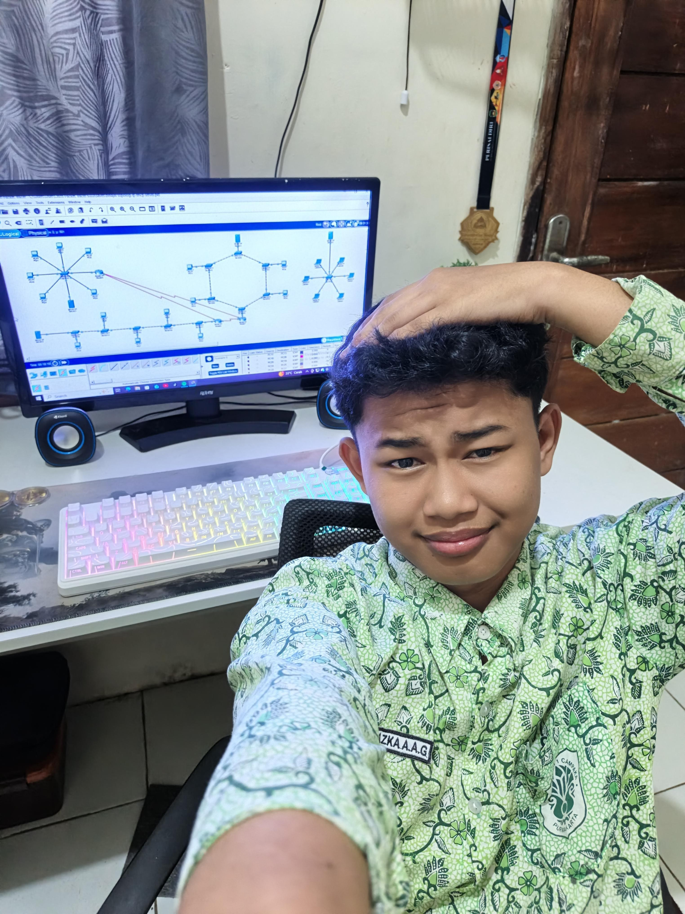
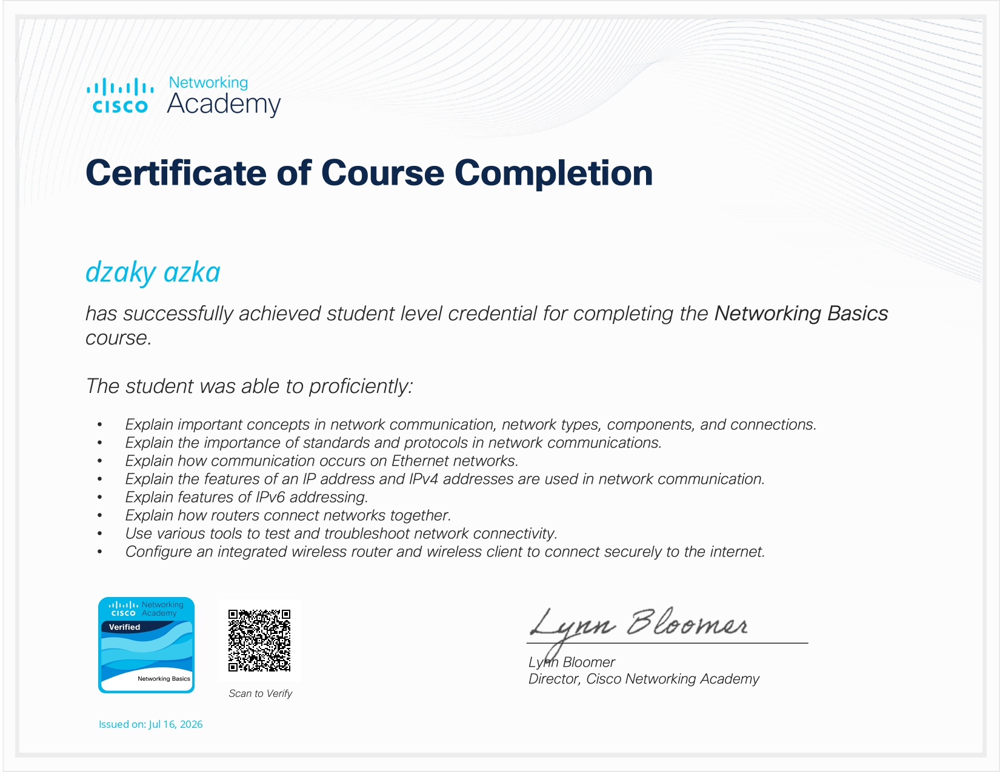
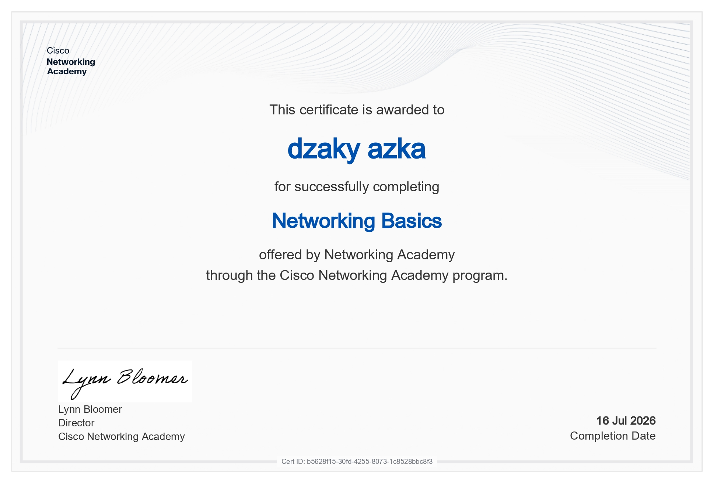
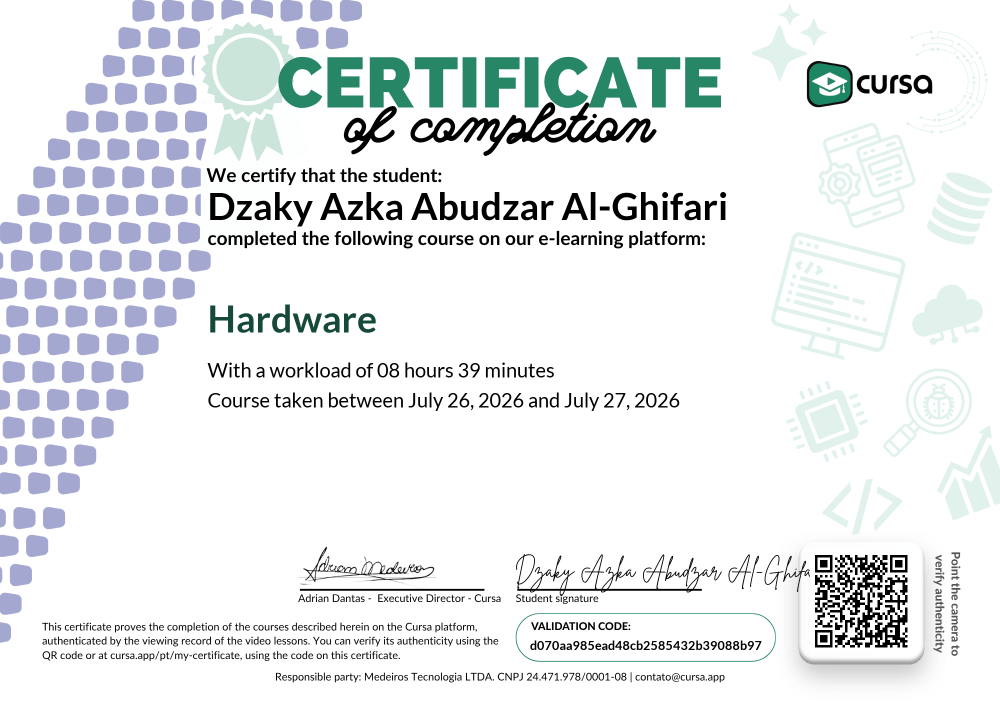
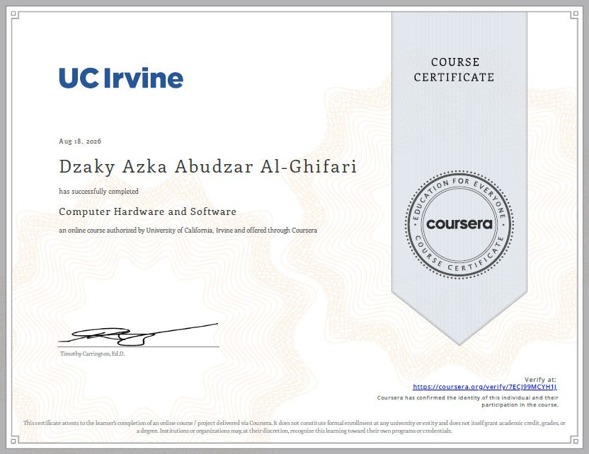
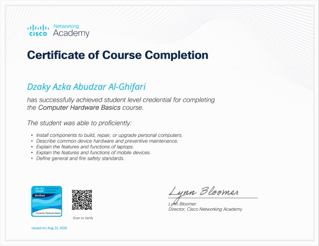
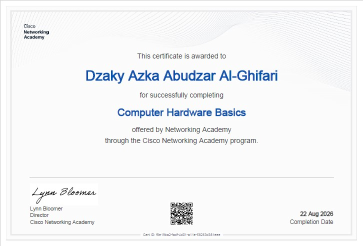

Selamat datang di portofolio sertifikasi resmi saya. Saya berfokus pada perancangan arsitektur jaringan komputer yang aman, serta pengembangan aplikasi web modern berkinerjanya tinggi.

<Networking & Technical Hardware/>
Membawa solusi infrastruktur jaringan & pemrograman yang terintegrasi.
Kumpulan lisensi dan sertifikat profesional yang telah saya raih. Klik pada gambar untuk memperbesar tampilan.

Sertifikasi keahlian dalam mengonfigurasi routing, switching, subnetting, serta manajemen keamanan jaringan lokal (LAN/WAN). Sertifikat ini dari Cisco Networking Academy.

Sertifikasi keahlian dalam mengonfigurasi routing, switching, subnetting, serta manajemen keamanan jaringan lokal (LAN/WAN). Sertifikat ini dari Cisco Networking Academy.

Memahami dasar-dasar perangkat keras komputer, instalasi dan konfigurasi sistem, serta pemecahan masalah teknis.

Memahami dasar-dasar perangkat keras komputer, instalasi dan konfigurasi sistem, sistem operasi, serta pemecahan masalah teknis. Sertifikat ini dari Coursera.

Memahami dasar-dasar perangkat keras komputer, instalasi dan konfigurasi sistem, komponen Hardware, perakitan PC, serta pemecahan masalah teknis. Sertifikat ini dari Cisco Networking Academy.

Memahami dasar-dasar perangkat keras komputer, instalasi dan konfigurasi sistem, komponen Hardware, perakitan PC, serta pemecahan masalah teknis. Sertifikat ini dari Cisco Networking Academy.